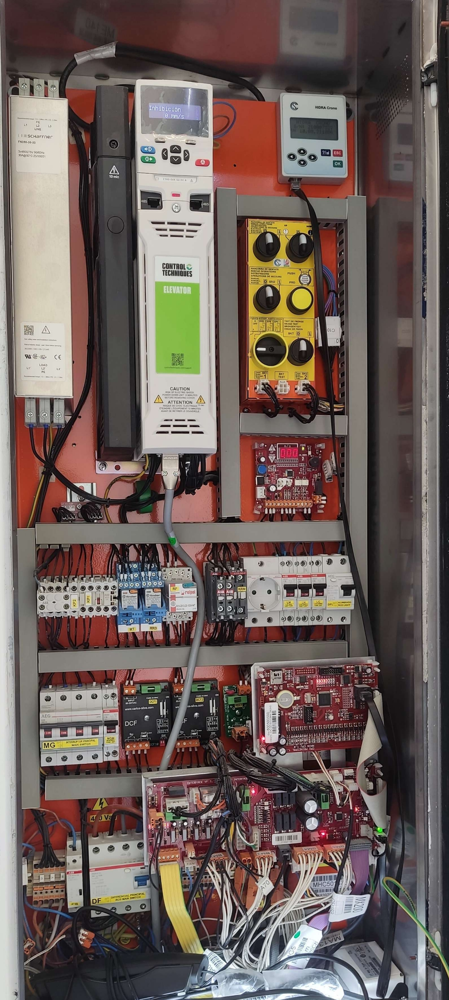

• Valide os LEDs de estado da série de segurança diretamente na placa principal.
• Garanta que o circuito secundário do transformador mantém a estabilidade nos 48V AC.
• ATENÇÃO: Desfaça qualquer shunt de diagnóstico antes de colocar o elevador em serviço normal.
| # | Circuito / Componente Ativo | Bornes de Medição |
|---|---|---|
| Aguardando a numeração sequencial dos bornes de campo... | ||